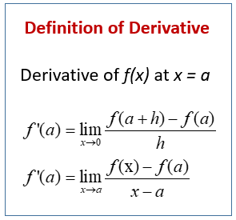
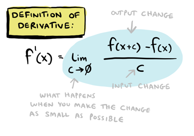

Overview
The derivative of a function is one of the basic concepts of mathematics. Together with the integral, derivative occupies a central place in calculus. The process of finding the derivative is called differentiation. The derivative of a function at some point characterizes the rate of change of the function at this point.
|  |  |
Product/Quotient Rule
The Product Rule is a formal rule for differentiating problems where one function is multiplied by another. Each time, differentiate a different function in the product and add the two terms together. The Quotient Rule is defined as the quantity of the denominator times the derivative of the numerator minus the numerator times the derivative of the denominator all over the denominator squared.
Related Rates
In differential calculus, related rates problems involve finding a rate at which a quantity changes by relating that quantity to other quantities whose rates of change are known. The rate of change is usually with respect to time.
Implicit Differentiation
Definition of implicit differentiation. : the process of finding the derivative of a dependent variable in an implicit function by differentiating each term separately, by expressing the derivative of the dependent variable as a symbol, and by solving the resulting expression for the symbol.